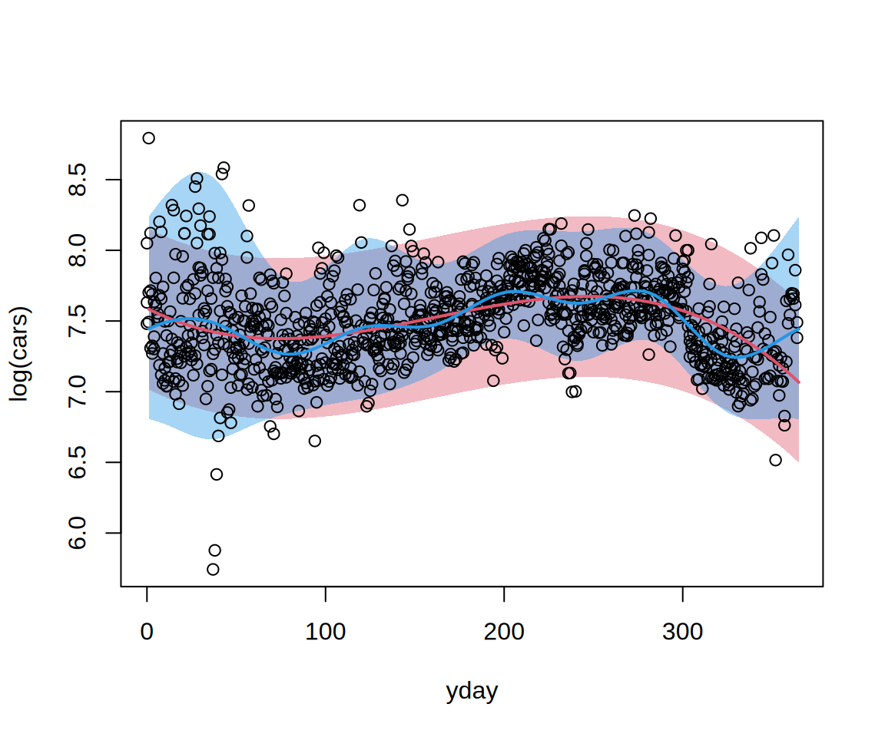
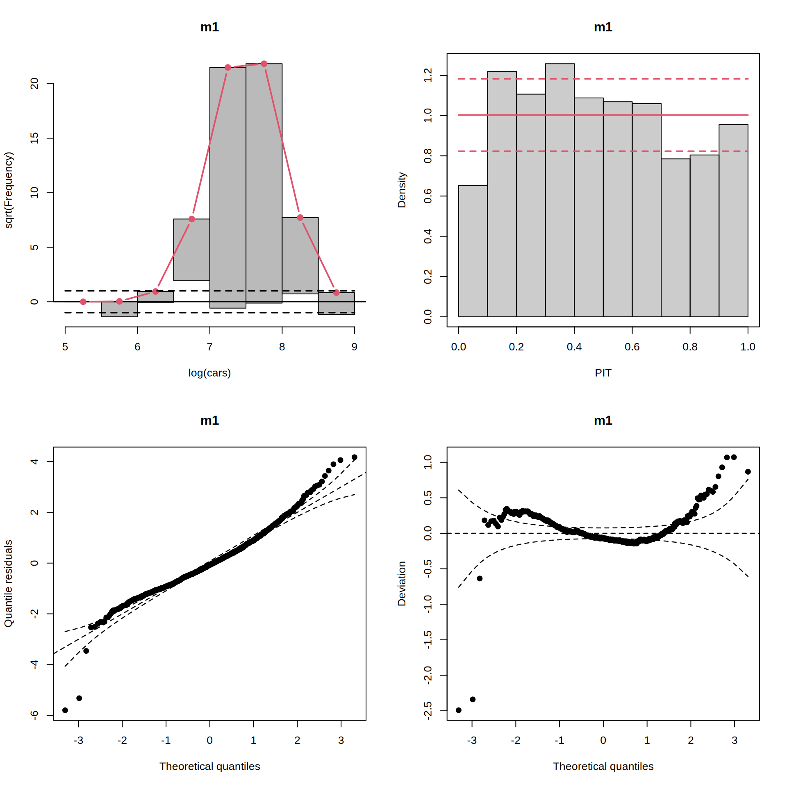
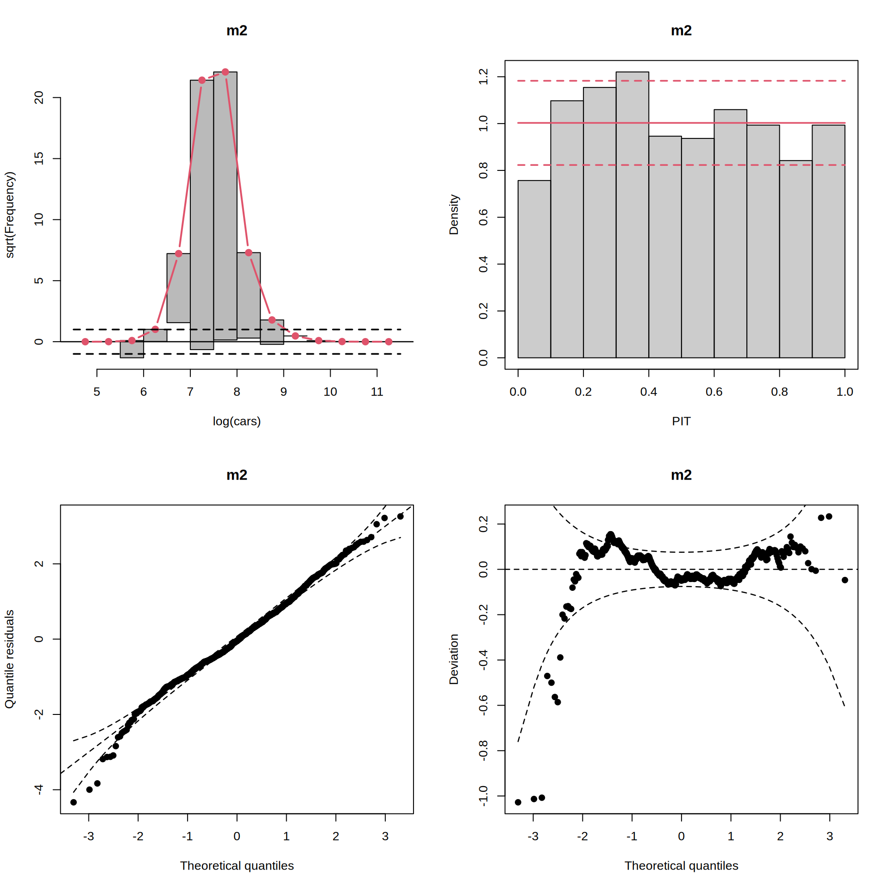
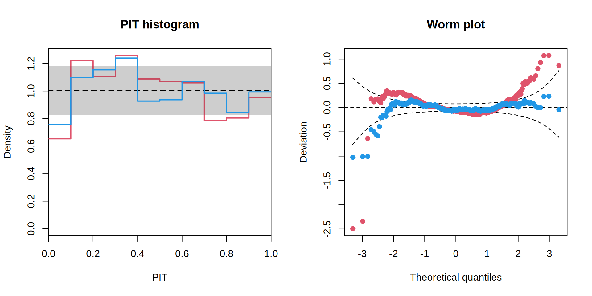

if(!("topmodels" %in% installed.packages())) {
install.packages("topmodels", repos = "https://zeileis.R-universe.dev")
}
if(packageVersion("gamlss.dist") < "6.1-3") {
install.packages("gamlss.dist", repos = "https://gamlss-dev.R-universe.dev")
}Forecasting and Assessment with topmodels

1 Probabilistic model infrastructure
Introduction on how to use the topmodels package (topmodels?) with gamlss2.
Currently not on CRAN, yet, so install from R-universe (if not done already).
On GitHub, unfortunately, in the GitHub Action the gamlss.dist package is always taken from CRAN (via r-cran-gamlss.dist apparently).
packageVersion("gamlss.dist")[1] '6.1.1'2 Data and models
library("gamlss2")
data("HarzTraffic", package = "gamlss2")
m1 <- lm(log(cars) ~ poly(yday, 3), data = HarzTraffic)
m2 <- gamlss2(log(cars) ~ s(yday, bs = "cc") | s(yday, bs = "cc"), data = HarzTraffic, family = SN2)3 Probabilistic forecasting
library("topmodels")
nd <- data.frame(yday = 1:365)
nd <- cbind(nd,
procast(m1, newdata = nd, type = "quantile", at = c(0.025, 0.5, 0.975)),
procast(m2, newdata = nd, type = "quantile", at = c(0.025, 0.5, 0.975)))
plot(log(cars) ~ yday, data = HarzTraffic, type = "n")
polygon(c(nd[[1]], rev(nd[[1]])), c(nd[[2]], rev(nd[[4]])),
col = adjustcolor(2, alpha.f = 0.4), border = "transparent")
polygon(c(nd[[1]], rev(nd[[1]])), c(nd[[5]], rev(nd[[7]])),
col = adjustcolor(4, alpha.f = 0.4), border = "transparent")
points(log(cars) ~ yday, data = HarzTraffic)
lines(nd[[1]], nd[[3]], col = 2, lwd = 2)
lines(nd[[1]], nd[[6]], col = 4, lwd = 2)
4 Graphical model assessment
4.1 Within model diagnostics
par(mfrow = c(2, 2))
rootogram(m1)
pithist(m1)
qqrplot(m1)
wormplot(m1)
par(mfrow = c(2, 2))
rootogram(m2)
pithist(m2)
qqrplot(m2)
wormplot(m2)
4.2 Between Models diagnostics
par(mfrow = c(1, 2))
p1 <- pithist(m1, plot = FALSE)
p2 <- pithist(m2, plot = FALSE)
plot(c(p1, p2), col = c(2, 4), single_graph = TRUE, style = "line")
w1 <- wormplot(m1, plot = FALSE)
w2 <- wormplot(m2, plot = FALSE)
plot(c(w1, w2), col = c(2, 4), single_graph = TRUE)
5 Scoring rules
m <- list(lm = m1, gamlss2 = m2)
sapply(m, proscore, type = c("logs", "crps", "mae", "mse", "dss"))Loading required namespace: scoringRules lm gamlss2
logs 0.1806799 0.0369116
crps 0.1580683 0.1471254
mae 0.2191784 0.2081393
mse 0.08403538 0.07790537
dss -1.476517 -1.741182